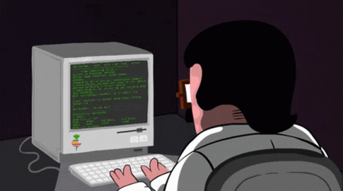

Trabalhando com imagens e links no HTMl
Utilizando imagens da web para exibir na pagina

Utilizando imagens dos recursos para exibir na pagina

Agora alterando largura e altura

Alterar a imagem de acordo com amlargura do dispositivo que acessa a imagem

DESAFIO!!

Construir um mapa clicavel dentro da imagem, atraves de rescurso MAP:

Fale conosco: